2019年普通高等学校招生全国统一考试 理科综合能力测试（全国Ⅰ卷）
注意事项：1．答卷前，考生务必将自己的姓名、准考证号填写在答题卡上。2．回答选择题时，选出每小题答案后，用铅笔把答题卡上对应题目的答案标号涂黑，如需改动，用橡皮擦干净后，再选涂其它答案标号。回答非选择题时，将答案写在答题卡上，写在本试卷上无效。3．考试结束后，将本试卷和答题卡一并交回。
本册收录物理部分，保留原题号14—25、33、34及全部小问；其他学科题文和相对原子质量表不属于本册范围。物理作答总分为110分：选择题48分、必考非选择题47分、选考15分。33、34两题均提供解析，考试时按原卷规则任选一题作答。
相关题目：第 14 题
本题共8小题，每小题6分，共48分。在每小题给出的四个选项中，第14—18题只有一项符合题目要求，第19—21题有多项符合题目要求。全部选对的得6分，选对但不全的得3分，有选错的得0分。
相关题目：第 14 题 · 第 15 题 · 第 16 题 · 第 17 题 · 第 18 题 · 第 19 题 · 第 20 题 · 第 21 题
返回原卷说明与本册范围 返回二、选择题（48分）
题目与已知条件
氢原子能级示意图如图所示。光子能量在1.63 eV～3.10 eV的光为可见光。要使处于基态（n=1）的氢原子被激发后可辐射出可见光光子，最少应给氢原子提供的能量为（ ）。
按原始能级数据重绘，所有能级数值保持：0、−0.85、−1.51、−3.40、−13.60 eV。A．12.09 eV
B．10.20 eV
C．1.89 eV
D．1.51 eV
查看原题图／原始配图
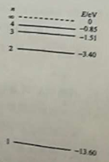
原题来源中的未美化配图（原Word内嵌图）读题与思路
先找产生可见光的最低激发态，再算从基态到该激发态所需能量。
分步解析
- 只激发到n=2时，回到基态的光子能量为−3.40−(−13.6)=10.20 eV，超出可见光范围。
- 激发到n=3时，可经3→2跃迁放出能量−1.51−(−3.40)=1.89 eV的光子，落在题给区间内。
- 因此最低应激发至n=3。所需吸收能量为E₃−E₁=−1.51−(−13.6)=12.09 eV，对应A。
检查与易错点
1.89 eV是某次发光的能量，不是从基态完成激发所需的全部能量。
本题来源：paper · cross · drive-ref-1 · web-primary-doc
返回二、选择题（48分）
题目与已知条件
如图，空间存在一方向水平向右的匀强电场，两个带电小球P和Q用相同的绝缘细绳悬挂在水平天花板下，两细绳都恰好与天花板垂直，则（ ）。
按原图几何关系重绘：P左、Q右，两绳竖直，电场向右。A．P和Q都带正电荷
B．P和Q都带负电荷
C．P带正电荷，Q带负电荷
D．P带负电荷，Q带正电荷
查看原题图／原始配图
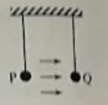
原题来源中的未美化配图（原Word内嵌图）读题与思路
绳子竖直，不能提供水平分力；每个小球的外电场力必须与相互作用力抵消。
分步解析
- 若两球同号，它们所受外电场力方向相同，而相互作用力方向相反，至少有一个球的两个水平力同向，不能同时平衡，排除A、B。
- 若P正Q负，两球相吸，P所受吸引力和外电场力都向右，也不能平衡，排除C。
- 若P负Q正，则P所受外电场力向左、相互吸引力向右；Q所受外电场力向右、相互吸引力向左，均可平衡，D正确。
检查与易错点
只判断“异号相吸”还不足够，必须同时核对两个球的电场力方向。
本题来源：paper · cross · drive-ref-1 · web-primary-doc
返回二、选择题（48分）
题目与已知条件
最近，我国为“长征九号”研制的大推力新型火箭发动机联试成功，这标志着我国重型运载火箭的研发取得突破性进展。若某次实验中该发动机向后喷射的气体速度约为3 km/s，产生的推力约为4.8×106 N，则它在1 s时间内喷射的气体质量约为（ ）。
A．1.6×10² kg
B．1.6×10³ kg
C．1.6×10⁵ kg
D．1.6×10⁶ kg
读题与思路
在发动机试验的近似模型中，1 s内喷出气体获得的动量由发动机施加的冲量提供。
分步解析
- 先把气体速度换成国际单位：v=3×10³ m/s。气体所受作用力大小与推力相等。
- 取这1 s中喷出的气体为研究对象，气体获得的动量大小约为Δmv，满足FΔt=Δmv。
- Δm=FΔt/v=(4.8×10⁶×1)/(3×10³) kg=1.6×10³ kg，选B。
检查与易错点
把3 km/s直接当3 m/s代入会使结果放大1000倍。
本题来源：paper · cross · drive-ref-1 · web-primary-doc
返回二、选择题（48分）
题目与已知条件
如图，等边三角形线框LMN由三根相同的导体棒连接而成，固定于匀强磁场中，线框平面与磁感应强度方向垂直，线框顶点M、N与直流电源两端相接。已知导体棒MN受到的安培力大小为F，则线框LMN受到的安培力的大小为（ ）。
等边三角形LMN、电源极性及磁场方向按原图重绘。A．2F
B．1.5F
C．0.5F
D．0
查看原题图／原始配图
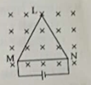
原题来源中的未美化配图（原Word内嵌图）读题与思路
先求两个并联支路的电流，再把折线MLN的合安培力按有效长度MN计算。
分步解析
- 设每根棒电阻为R，MN支路电流为I，则MLN支路电阻为2R、电流为I/2。
- 设边长为l，MN所受力F=BIl。ML和LN所受力大小都为BIl/2；两力关于MN的中垂线对称，其沿MN方向的分量相消。
- 另两棒电流合起来从M流向N，与MN电流方向相同。其安培力合力大小等于B(I/2)l=F/2，方向与MN所受力相同。
- 线框合力大小F+F/2=1.5F，选B。这里只计三角形线框，不把接电源的外部导线纳入研究对象。
检查与易错点
折线的有效长度是两端点间的直线位移，不是两根棒长度之和。
本题来源：paper · cross · drive-ref-1 · web-primary-doc
返回二、选择题（48分）
题目与已知条件
如图，篮球架下的运动员原地垂直起跳扣篮，离地后重心上升的最大高度为H。上升第一个H/4所用的时间为t₁，第四个H/4所用的时间为t₂。不计空气阻力，则t₂/t₁满足（ ）。
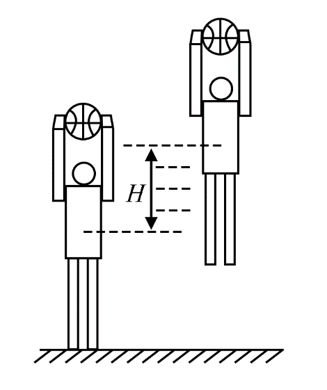
运动员上升高度分段图（来源：享受物理同题清晰图）A．1<t₂/t₁<2
B．2<t₂/t₁<3
C．3<t₂/t₁<4
D．4<t₂/t₁<5
查看原题图／原始配图
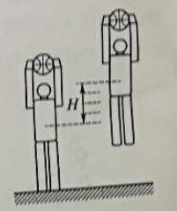
原题来源中的未美化配图（原Word内嵌图）所用高中知识
竖直上抛；运动的时间反演；匀变速公式。
读题与思路
把上升反过来看成从最高点自由落体，最后一段上升对应最初一段下落。
分步解析
- 从最高点自由落体落下H的总时间为τ=√(2H/g)。落下H/4的时间为τ/2，所以t₂=τ/2。
- 上升第一个H/4对应自由落体最后H/4。自由落体先落下3H/4需时间√3τ/2，故t₁=τ−√3τ/2=(2−√3)τ/2。
- 因此t₂/t₁=1/(2−√3)=2+√3≈3.73，处于3和4之间，选C。
检查与易错点
等位移段所用时间不相等；越接近最高点，速度越小、所需时间越长。
本题来源：paper · cross · drive-ref-1 · web-primary-doc
返回二、选择题（48分）
题目与已知条件
如图，一粗糙斜面固定在地面上，斜面顶端装有一光滑定滑轮。一细绳跨过滑轮，其一端悬挂物块N，另一端与斜面上的物块M相连，系统处于静止状态。现用水平向左的拉力缓慢拉动N，直至悬挂N的细绳与竖直方向成45°。已知M始终保持静止，则在此过程中（ ）。
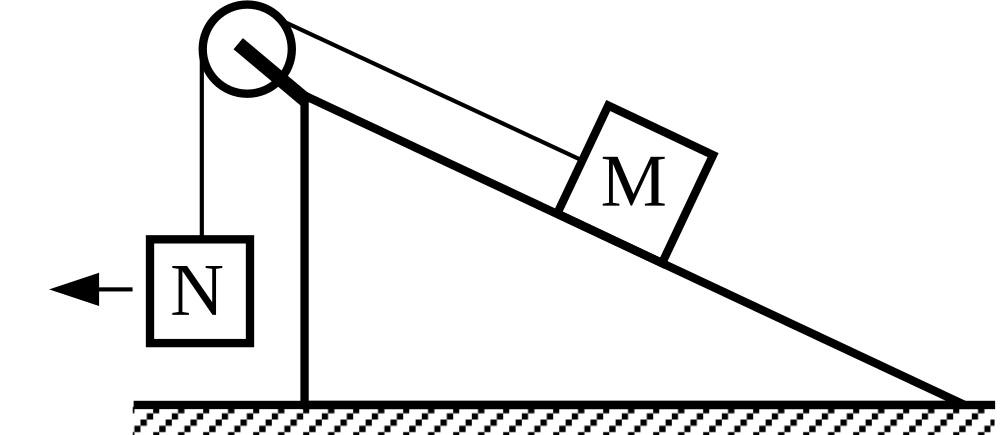
斜面物块与受水平拉力的悬挂物块（来源：享受物理同题清晰图）A．水平拉力的大小可能保持不变
B．M所受细绳的拉力大小一定一直增加
C．M所受斜面的摩擦力大小一定一直增加
D．M所受斜面的摩擦力大小可能先减小后增加
查看原题图／原始配图
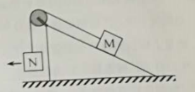
原题来源中的未美化配图（原Word内嵌图）读题与思路
由悬挂物块求张力，再对斜面物块列有向平衡式。静摩擦大小要取绝对值。
分步解析
- 设N质量为mN，绳与竖直夹角为θ。缓慢移动可按平衡处理：T cosθ=mNg，F=T sinθ=mNg tanθ。
- θ从0增至45°，cosθ减小，所以T一直增加；tanθ增加，所以F也一直增加。A错，B对。
- 设斜面倾角α，以M沿斜面向上为正，有T+f−mMg sinα=0，即有向摩擦力f=mMg sinα−T。
- 随着T增加，f可能从正值降至0再变为负值。此时摩擦力大小|f|先减小后增加，故D可能成立；C不是必然成立。
检查与易错点
静摩擦力不是恒等于μN。物块虽始终静止，静摩擦仍可换向。
本题来源：paper · cross · drive-ref-1 · web-primary-doc
返回二、选择题（48分）
题目与已知条件
空间存在一方向与纸面垂直、大小随时间变化的匀强磁场，其边界如图（a）中虚线MN所示。一硬质细导线的电阻率为ρ、横截面积为S，将该导线做成半径为r的圆环固定在纸面内，圆心O在MN上。t=0时磁感应强度的方向如图（a）所示，磁感应强度B随时间t的变化关系如图（b）所示，则在t=0到t=t₁的时间间隔内（ ）。
保留B₀、t₀、t₁标记与线性过零关系；t₁无数值，不另赋刻度。A．圆环所受安培力的方向始终不变
B．圆环中的感应电流始终沿顺时针方向
C．圆环中的感应电流大小为B₀rS/(4t₀ρ)
D．圆环中的感应电动势大小为B₀πr²/(4t₀)
查看原题图／原始配图
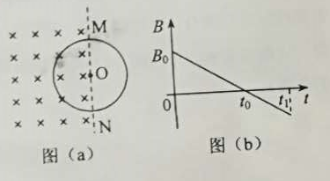
原题来源中的未美化配图（原Word内嵌图）所用高中知识
法拉第定律；楞次定律；电阻定律；安培力。
读题与思路
有磁通的面积是半圆，参与导电的却是整圆。B图像过零不代表电流变向。
分步解析
- 取向里为磁场正方向，图像斜率恒为−B₀/t₀。有效面积A=πr²/2，感应电动势大小ε=A|ΔB/Δt|=πr²B₀/(2t₀)，所以D少了2倍。
- 圆环总电阻R=ρ(2πr)/S，故I=ε/R=B₀rS/(4ρt₀)，C正确。
- 0到t₀，向里磁通减小，感应场向里；t₀后向外磁通增加，感应场仍向里。因此感应电流始终顺时针，B正确。
- 左半圆等效受力导线的有效长度为2r。电流方向不变，但外磁场在t₀前后反向，故安培力方向反向；t₀瞬间力为0，A错误。
检查与易错点
楞次定律阻碍的是磁通的变化；不是简单地总让感应磁场与原磁场反向。
本题来源：paper · cross · drive-ref-1 · web-primary-doc
返回二、选择题（48分）
题目与已知条件
在星球M上将一轻弹簧竖直固定在水平桌面上，把物体P轻放在弹簧上端，P由静止向下运动，物体的加速度a与弹簧的压缩量x间的关系如图中实线所示。在另一星球N上用完全相同的弹簧，改用物体Q完成同样的过程，其a—x关系如图中虚线所示。假设两星球均为质量均匀分布的球体。已知星球M的半径是星球N的3倍，则（ ）。
按原图截距数据重绘：P为(0,3a₀)与(x₀,0)的实线；Q为(0,a₀)与(2x₀,0)的虚线。A．M与N的密度相等
B．Q的质量是P的3倍
C．Q下落过程中的最大动能是P的4倍
D．Q下落过程中弹簧的最大压缩量是P的4倍
查看原题图／原始配图
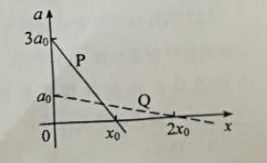
原题来源中的未美化配图（原Word内嵌图）所用高中知识
牛顿第二定律；万有引力；弹性势能；图像截距和斜率。
读题与思路
a=g−kx/m的纵截距给g、斜率给k/m、横截距给平衡压缩量。
分步解析
- 由图纵截距可得gM=3a₀，gN=a₀。均匀球表面g=GM/R²=(4πG/3)ρR；g比和R比均为3，所以ρM=ρN，A正确。
- 实线斜率大小k/mP=3a₀/x₀，虚线k/mQ=a₀/(2x₀)，于是mQ/mP=6，B错误。
- 由静止下落x时，动能K=mgx−kx²/2。写成K=kxe²/2−k(x−xe)²/2，其中xe=mg/k。最大动能为kxe²/2；两平衡压缩量分别x₀、2x₀，所以最大动能比为4，C正确。
- 最大压缩时动能再次为0：mgx=kx²/2，非零解xmax=2mg/k=2xe。Q、P最大压缩量之比为2，D错误。
检查与易错点
必须区分加速度为0的平衡位置与速度为0的最大压缩位置。全题只用二次式配方，无须微积分。
本题来源：paper · cross · drive-ref-1 · web-primary-doc
原理综卷：非选择题共174分。第22—32题为必考题，每个试题考生都必须作答。第33—38题为选考题，考生根据要求作答。
（一）必考题，共129分。以上174分、129分均为整份理综的跨科分值。本册物理必考题为22—25题，共47分。
相关题目：第 22 题 · 第 23 题 · 第 24 题 · 第 25 题
返回三、非选择题与必考题
题目与已知条件
（5分）某小组利用打点计时器对物块沿倾斜的长木板加速下滑时的运动进行研究。物块拖动纸带下滑，打出的纸带一部分如图所示。已知打点计时器所用交流电的频率为50 Hz，纸带上标出的每两个相邻点之间还有4个打出的点未画出。在ABCDE五个点中，打点计时器最先打出的是______点；在打出C点时物块的速度大小为______m/s（保留3位有效数字）；物块下滑的加速度大小为______m/s²（保留2位有效数字）。
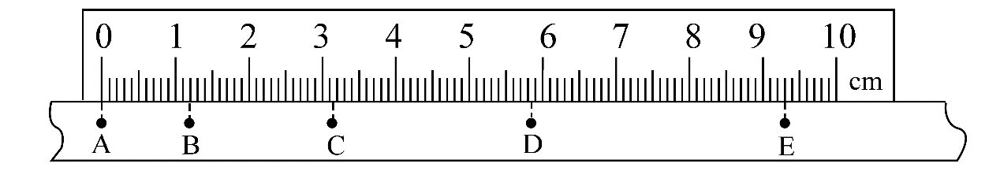
原Word中的纸带与厘米尺：刻度、A—E打点位置逐像素保留。查看原题图／原始配图
原题来源中的未美化配图（原Word内嵌图）
所用高中知识
估读；计数点时间；中间时刻速度；逐差法。
读题与思路
先把5个打点间隔换成0.10 s，再把各点的厘米读数逐项写出。
分步解析
- 打点周期1/50 s=0.02 s，相邻计数点之间有4个未画点，所以间隔包含5个周期：T=0.10 s。点间距沿A→E依次增大，物块加速，故最先打出A。
- 按尺的毫米刻度估读：xA=0.00 cm，xB=1.20 cm，xC=3.15 cm，xD=5.85 cm，xE=9.30 cm。
- C位于B、D的中间时刻，因此vC=(xD−xB)/(2T)=(5.85−1.20)×10−2/(2×0.10) m/s=0.2325 m/s，保留3位有效数字为0.233 m/s。
- AC、CE两段均历时2T，位移分别3.15 cm和9.30−3.15=6.15 cm。位移差为a(2T)²，故a=(6.15−3.15)×10−2/(4×0.10²) m/s²=0.75 m/s²。
检查与易错点
“中间还有4点”对应5个周期。尺读数先保持cm，代公式时统一乘10−2换为m。
本题来源：paper · cross · drive-ref-1 · web-primary-doc
返回三、非选择题与必考题
题目与已知条件
（10分）某同学要将一量程为250 μA的微安表改装为量程为20 mA的电流表。该同学测得微安表内阻为1200 Ω，经计算后将一阻值为R的电阻与微安表连接，进行改装。然后利用一标准毫安表，根据图（a）所示电路对改装后的电表进行检测（虚线框内是改装后的电表）。
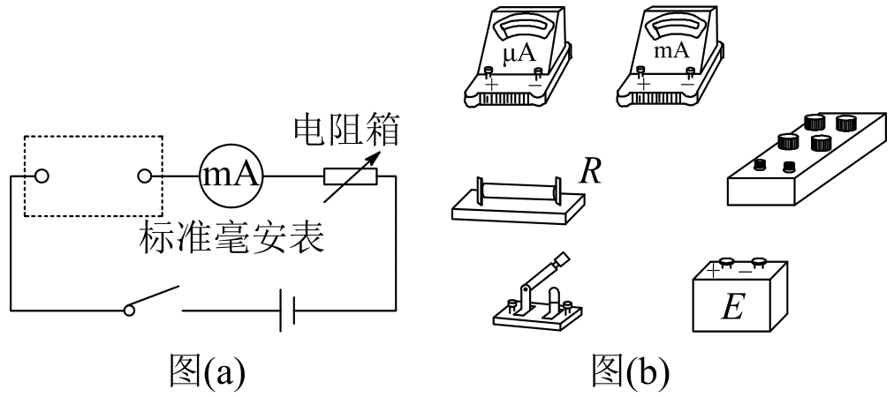
改装电表的检测原理图与待连实物图（来源：享受物理同题清晰图）（1）根据图（a）和题给条件，将图（b）中的实物连接。
（2）当标准毫安表的示数为16.0 mA时，微安表的指针位置如图（c）所示，由此可以推测出改装的电表量程不是预期值，而是______。（填正确答案标号）
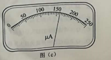
原Word中的微安表刻度与指针：0—250 μA，保持原始读数。A．18 mA
B．21 mA
C．25 mA
D．28 mA
（3）产生上述问题的原因可能是______。（填正确答案标号）
A．微安表内阻测量错误，实际内阻大于1200 Ω
B．微安表内阻测量错误，实际内阻小于1200 Ω
C．R值计算错误，接入的电阻偏小
D．R值计算错误，接入的电阻偏大
（4）要达到预期目的，无论测得的内阻值是否正确，都不必重新测量，只需要将阻值为R的电阻换为一个阻值为kR的电阻即可，其中k=______。
查看原题图／原始配图
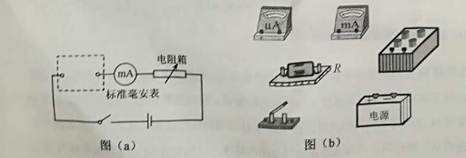
原题来源中的未美化配图（原Word内嵌图）原题来源中的未美化配图（原Word内嵌图）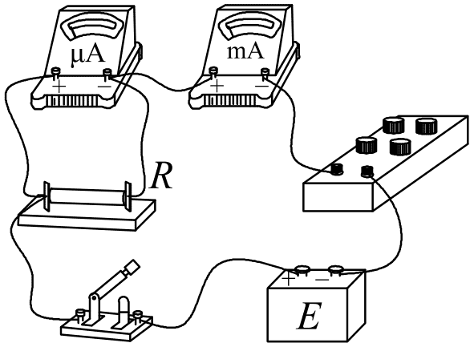
修订前解析配图 3 · 并联分流与标准毫安表串联的参考接线（来源：享受物理同题清晰图）读题与思路
并联支路电压相同，总电流与表头电流的比值决定改装量程。由一次比较测量就能求所需电阻倍数。
分步解析
- 将R并联在微安表两端，两者组成改装电表；再与标准毫安表、电阻箱、电源及开关串联。正电流必须从两表正接线柱流入。实物接线如下。并联分流与标准毫安表串联的参考接线（来源：享受物理同题清晰图）
- 图（c）每小格5 μA，指针在160 μA。标准毫安表示16.0 mA=16000 μA，所以实际放大倍数n=16000/160=100。表头满偏250 μA时总电流100×250 μA=25 mA，选C。
- 设表头实际内阻为r，表头电流为Ig。分流电流IR=Igr/R，故总电流I=Ig(1+r/R)，即n=1+r/R。
- 目标放大倍数为20 mA/250 μA=80，而实际为100，说明r/R偏大：可能是实际r大于测量值，也可能R接得偏小，故（3）选AC。
- 实际电路已知r/R=99。换成kR后要满足1+r/(kR)=80，所以99/k=79，得到k=99/79。该式消去了未知的实际r，不必再测它。
答案
（1）见接线图，R与微安表并联后与标准表串联；（2）C；（3）AC；（4）99/79。
检查与易错点
改装成大量程电流表应并联分流。不能把两电表直接并联，也不能把分流电阻串入微安表支路。
本题来源：paper · cross · drive-ref-1 · web-primary-doc
返回三、非选择题与必考题
题目与已知条件
（12分）如图，在直角三角形OPN区域内存在匀强磁场，磁感应强度大小为B、方向垂直于纸面向外。一带正电的粒子从静止开始经电压U加速后，沿平行于x轴的方向射入磁场；一段时间后，该粒子在OP边上某点以垂直于x轴的方向射出。已知O点为坐标原点，N点在y轴上，OP与x轴的夹角为30°，粒子进入磁场的入射点与离开磁场的出射点之间的距离为d，不计重力。求：（1）带电粒子的比荷；（2）带电粒子从射入磁场到运动至x轴的时间。
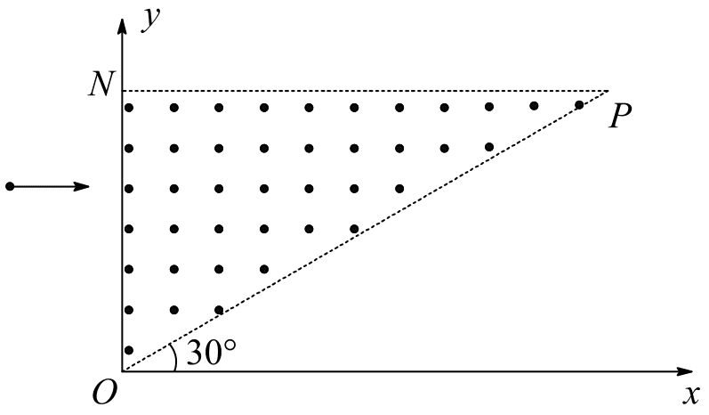
直角三角形OPN中的匀强磁场：修订前所附享受物理同题图（原Word题图未取得）查看原题图／原始配图
修订前所附享受物理同题图（原Word题图未取得）
所用高中知识
电场加速；圆周运动；弦长；直线运动时间。
读题与思路
磁场内速度向右转到向下，对应90°圆弧。题目总时间还包括出磁场后的直线段。
分步解析
- 设粒子电荷量q、质量m、入场速率v、轨道半径r。由加速过程qU=mv²/2，磁场中qvB=mv²/r。
- 入射向右、出射向下，转过90°，两点弦长d=√2r，故r=d/√2。将v=qBr/m代入能量式，得到q/m=2U/(B²r²)=4U/(B²d²)。
- 粒子从y轴入射，转过90°后横向位移为r，所以出射点横坐标为r；它位于倾角30°的OP上，纵坐标y=r tan30°=r/√3。
- 磁场内用时tB=(πr/2)/v=πm/(2qB)。出场后沿竖直方向匀速向下，用时t外=(r/√3)/v=m/(√3qB)。
- 总时间t=(π/2+1/√3)m/(qB)。代入比荷，得到t=(π/2+√3/3)d²B/(4U)。
答案
（1）q/m=4U/(B²d²)；（2）t=(π/2+√3/3)d²B/(4U)。
检查与易错点
出射点在OP上，并不在x轴上。漏掉出场后的直线时间会少m/(√3qB)。
本题来源：paper · cross · drive-ref-1 · web-primary-doc
返回三、非选择题与必考题
题目与已知条件
（20分）竖直面内一倾斜轨道与一足够长的水平轨道通过一小段光滑圆弧平滑连接，小物块B静止于水平轨道的最左端，如图（a）所示。t=0时刻，小物块A在倾斜轨道上从静止开始下滑，一段时间后与B发生弹性碰撞（碰撞时间极短）；当A返回到倾斜轨道上的P点（图中未标出）时，速度减为0，此时对其施加一外力，使其在倾斜轨道上保持静止。物块A运动的v—t图像如图（b）所示，图中的v₁和t₁均为未知量。已知A的质量为m，初始时A与B的高度差为H，重力加速度大小为g，不计空气阻力。
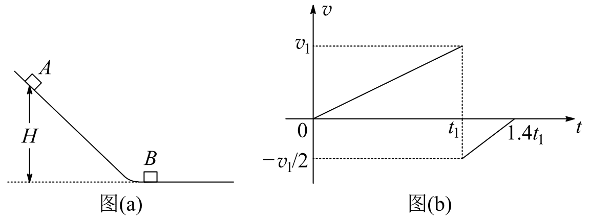
轨道与A的速度时间图，停止时刻1.4t₁（来源：享受物理同题清晰图）（1）求物块B的质量。
（2）在图（b）所描述的整个运动过程中，求物块A克服摩擦力所做的功。
（3）已知两物块与轨道间的动摩擦因数均相等，在物块B停止运动后，改变物块与轨道间的动摩擦因数，然后将A从P点释放，一段时间后A刚好能与B再次碰上。求改变前后动摩擦因数的比值。
查看原题图／原始配图
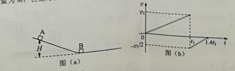
原题来源中的未美化配图（原Word内嵌图）所用高中知识
弹性碰撞；速度时间图；摩擦功；分段能量守恒。
读题与思路
图像先提供碰前后速度和上下行加速度比，继而确定摩擦参数与P点高度，最后用“恰好到达”表示终速为0。
分步解析
- 设B质量M、碰后速度u，取A初始下滑方向为正。图像给出碰前v₁，A碰后−v₁/2。碰撞动量守恒：mv₁=−mv₁/2+Mu。动能守恒：mv₁²/2=mv₁²/8+Mu²/2。两式联立得u=v₁/2，M=3m。
- 设斜面倾角θ、原动摩擦因数μ。图像斜率给下滑加速度a下=v₁/t₁，上滑减速加速度大小a上=(v₁/2)/(0.4t₁)=5v₁/(4t₁)。
- 牛顿第二定律给a下=g sinθ−μg cosθ，a上=g sinθ+μg cosθ。比值5/4，因此4(sinθ+μcosθ)=5(sinθ−μcosθ)，得μcotθ=1/9。
- 图像面积给A上滑路程与首次下滑路程之比：(v₁/2)×(0.4t₁)/(v₁t₁)=1/5，所以P高度h=H/5。A的摩擦耗能为μmg cosθ(H+h)/sinθ=mg(H+h)/9=2mgH/15。这也包含下滑、上滑两段。
- 首次下滑能量关系：v₁²/2=gH−μgHcotθ=8gH/9，所以v₁²=16gH/9。B碰后速率v₁/2，在水平面上停止前路程s=(v₁/2)²/(2μg)=2H/(9μ)。
- 将摩擦因数改为μ′。A从P释放后刚好到达静止B，末速度为0，所以mgh=μ′mg(hcotθ+s)。代入h=H/5、μcotθ=1/9和s=2H/(9μ)，得1/5=(μ′/μ)(1/45+2/9)=11μ′/(45μ)。
- 于是μ/μ′=11/9。新摩擦因数更小，使A可以从较低的P点出发，穿过斜面和水平段后刚好到达B。
答案
（1）3m；（2）2mgH/15；（3）μ/μ′=11/9。
检查与易错点
A反弹速度必须带负号。第（2）问只统计A的摩擦功，不把碰撞中转移给B的能量当成摩擦耗能。
本题来源：paper · cross · drive-ref-1 · web-primary-doc
原理综卷：选考题共45分。请考生从2道物理题、2道化学题、2道生物题中每科任选一题作答。如果多做，则每学科按所做的第一题计分。
本册物理选考题为第33、34题，每题15分。以下两道题均完整收录。
相关题目：第 33 题 · 第 34 题
返回（二）选考题
题目与已知条件
33．［物理——选修3—3］（15分）
（1）（5分）某容器中的空气被光滑活塞封住，容器和活塞绝热性能良好，空气可视为理想气体。初始时容器中空气的温度与外界相同，压强大于外界。现使活塞缓慢移动，直至容器中的空气压强与外界相同。此时，容器中空气的温度______（填“高于”“低于”或“等于”）外界温度，容器中空气的密度______（填“大于”“小于”或“等于”）外界空气的密度。
（2）（10分）热等静压设备广泛用于材料加工中。该设备工作时，先在室温下把惰性气体用压缩机压入到一个预抽真空的炉腔中，然后炉腔升温，利用高温高气压环境对放入炉腔中的材料加工处理，改善其性能。一台热等静压设备的炉腔中某次放入固体材料后剩余的容积为0.13 m³，炉腔抽真空后，在室温下用压缩机将10瓶氩气压入到炉腔中。已知每瓶氩气的容积为3.2×10−2 m³，使用前瓶中气体压强为1.5×107 Pa，使用后瓶中剩余气体压强为2.0×106 Pa；室温温度为27 ℃。氩气可视为理想气体。
（i）求压入氩气后炉腔中气体在室温下的压强；（ii）将压入氩气后的炉腔加热到1227 ℃，求此时炉腔中气体的压强。
所用高中知识
热力学第一定律；理想气体；气体数量守恒；等容变化。
读题与思路
绝热过程用能量判断温度；充气过程以同温下pV表示气体数量，注意瓶内尚有剩余气体。
分步解析
- （1）初始内压较高，气体缓慢膨胀并对外做功。绝热使Q=0，按ΔU=Q−W对外可知内能减小，理想气体温度降低，所以低于外界温度。
- 最终内外压强相等。对同种理想气体，p=ρRT/M摩，在p相同的情况下ρ与T成反比；内温更低，故容器内密度大于外界。
- （2）（i）设炉腔体积V=0.13 m³、每瓶体积V₀=0.032 m³。使用前后均为室温，每瓶转移出的气体对应(p₁−p₂)V₀；10瓶共同进入炉腔，所以pV=10(p₁−p₂)V₀。
- p=10×(1.5×10⁷−2.0×10⁶)×0.032/0.13 Pa=3.2×10⁷ Pa。不能按瓶中全部初始气体计算。
- （ii）封闭炉腔中的气体数量、体积均不变，p′/p=T′/T。绝对温度T=300 K，T′=1500 K，故p′=3.2×10⁷×1500/300 Pa=1.6×10⁸ Pa。
答案
（1）低于；大于。（2）（i）3.2×10⁷ Pa；（ii）1.6×10⁸ Pa。
检查与易错点
绝热不等于等温。气体定律必须使用开尔文温度，不能直接拿1227除以27。
本题来源：paper · cross · drive-ref-1 · web-primary-doc
返回（二）选考题
题目与已知条件
34．［物理——选修3—4］（15分）
（1）（5分）一简谐横波沿x轴正方向传播，在t=T/2时刻，该波的波形图如图（a）所示，P、Q是介质中的两个质点。图（b）表示介质中某质点的振动图像。下列说法正确的是______。（选对1个得2分，选对2个得4分，选对3个得5分；每选错1个扣3分，最低得分为0分。）
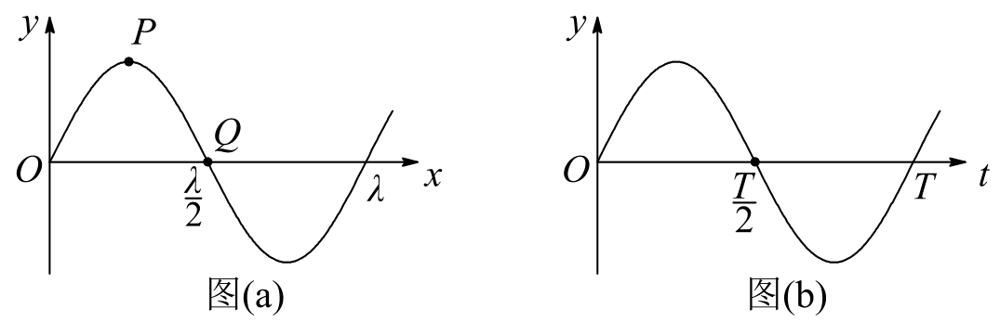
T/2时刻的波形图与某质点振动图（来源：享受物理同题清晰图）A．质点Q的振动图像与图（b）相同
B．在t=0时刻，质点P的速率比质点Q的大
C．在t=0时刻，质点P的加速度的大小比质点Q的大
D．平衡位置在坐标原点的质点的振动图像如图（b）所示
E．在t=0时刻，质点P与其平衡位置的距离比质点Q的大
（2）（10分）如图，一艘帆船静止在湖面上，帆船的竖直桅杆顶端高出水面3 m。距水面4 m的湖底P点发出的激光束，从水面出射后恰好照射到桅杆顶端，该出射光束与竖直方向的夹角为53°（取sin53°=0.8）。已知水的折射率为4/3。
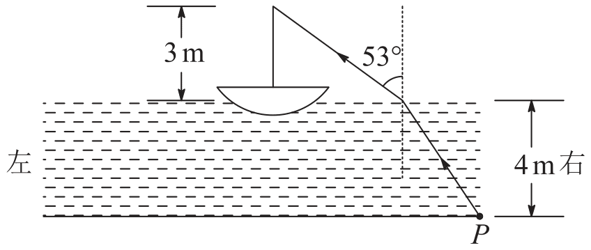
水下P点至船桅杆顶端的折射光路（来源：享受物理同题清晰图）（i）求桅杆到P点的水平距离；（ii）船向左行驶一段距离后停止，调整由P点发出的激光束方向，当其与竖直方向夹角为45°时，从水面射出后仍然照射在桅杆顶端，求船行驶的距离。
查看原题图／原始配图
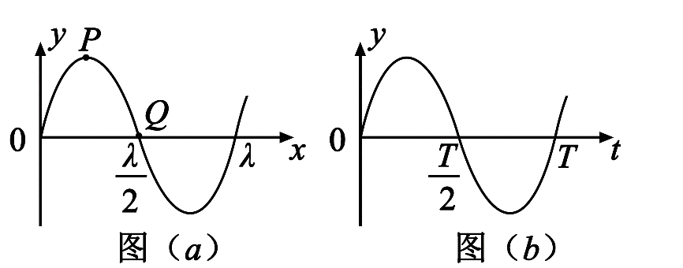
原题来源中的未美化配图（原Word内嵌图）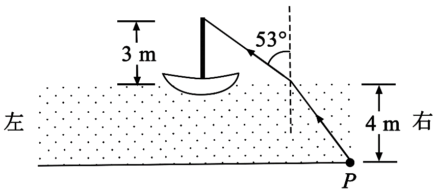
原题来源中的未美化配图（原Word内嵌图）所用高中知识
波形与振动图；半周期相位变化；折射定律；三角几何。
读题与思路
波题把T/2的状态退回半周期；光题分别计算水中、空气中的水平距离，再比较两次总距离。
分步解析
- （1）图（a）在T/2时P位于波峰、Q位于平衡位置。相隔半周期，t=0时P在波谷、Q仍在平衡位置，所以P速率为0、Q速率最大；B错。
- 简谐运动加速度大小与位移大小成正比，故t=0时P加速度最大、Q为0；P离平衡位置更远，因此C、E正确。
- 波向+x传播，用波形向右微移判断，T/2时Q向上，原点质点向下。图（b）T/2处向下过平衡位置，所以它是原点质点的振动图，不是Q的；D对，A错。
- （2）（i）设水中入射角i，空气中折射角r=53°。折射定律n sin i=sin r，得sin i=(3/4)×0.8=0.6，cos i=0.8，tan i=3/4。水中水平距离4tan i=3 m。
- 空气中cos53°=0.6，tan53°=4/3，水平距离3tan53°=4 m。所以桅杆到P的初始水平距离L₁=3+4=7 m。
- （ii）新入射角i′=45°，sin r′=(4/3)sin45°=2√2/3，cos r′=1/3，tan r′=2√2。水中水平距离4tan45°=4 m，空气中水平距离3tan r′=6√2 m。
- 新总水平距离L₂=4+6√2 m。船向左远离P的竖直投影，行驶距离s=L₂−L₁=(4+6√2)−7=6√2−3 m≈5.5 m。
答案
（1）CDE。（2）（i）7 m；（ii）6√2−3 m，约5.5 m。
检查与易错点
折射角均从法线量起。最后要相减两次总水平距离，不能只减两段水中距离；括号表示先求完整总距离。
本题来源：paper · cross · drive-ref-1 · web-primary-doc
题源与核验说明
- 2019.html旧版解析文件；SHA-256：bf2ce49123b8a08b96a49dff3070d18ca9746cc0c4871d4872250554fe435654
- 2019年高考真题——理科综合（全国卷Ⅰ） Word版含解析【KS5U 高考】.doc所附参考资料；SHA-256：63ba24679cde647b4b74ee0275a4782d4e455505fecfb02d7dabaf7245117ce2
- 2019-national.docx所附参考资料；SHA-256：d295aae5735102481a37fddb69cfa0d96e49b04d1395065490546ce938fc8e2a
- 中国教育在线 2019全国Ⅰ理综原卷（安徽教育考试院）下载两张完整原卷长图610×3573与610×4634，核对14—25、33、34题及全部选考小问。
- 享受物理 2019全国理综Ⅰ清晰题图及答案重新下载页面和15幅题图/接线图；题17等SVG转为白底PNG以免透明显示误差。用于原图清晰补充及答案交叉核验，解释均重新编写。22题尺图逐项估读，34题折射位移完整重新推导。